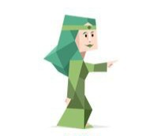

INTJ : شخصية المحامي

شخصية انطوائية ، حدسية ، عاطفية ، حازمة
صاحب مبادئ وقوانين وهو شديد الالتزام بها, محط ثقة واحترام كبيرين من قبل الآخرين لالتزامه بما يجب عليه القيام به حتى النهاية, يرفض أن يعيش تابعا ويفضل الاستقلال, يشعر ويقرأ ما يحدث حوله وما يشعر به بسهولة لأنه يهتم بمشاعر الآخرين جدا, حساس, قوي ولكن باتزان وهدوء, فريد من نوعه.
المثاليون الهادئون و الغامضون ، الملهمون لأبعد الحدود ، و الذين لا يملون أبدا
كل ما يسعى اليه هو التفهم
نقاط القوة
- مستمع ومحلل جيد
- يتعاطف مع من يواجه مشكلة
- يميل إلى الإستقلالية
- مرتب ومنظم إلى حد ما
- يتبع أسلوب عفوي
- يمتلكون قوة غير طبيعية في التوقع والحدس
- يتحفظ على جزء من ذاته
التواصـل
- يهتم بالناس من حوله
- لا يفضلون مشاركة حياتهم مع الناس
- يتواصل مع الناس على مستوى أصيل و عميق
نقاط الضعف
- يأخذ الأمور بشكل شخصي للغاية
- لا يملك عقلية تنافسية
- لديه الحذر المفرط
INFJ كأب و أم
يحرصون ع تربية اطفالهم على الاستقلالية ، يرغبون من اطفالهم أن يكونوا على طبيعتهم وقد يستخدمون التلاعب لجعل أطفالهم يفعلون الأمر الصائب
INFJ كطالب
اللطيف والمراعي الذي غالبا ما يوجه النصيحة للطلاب
نسبـة infj في العالم : 1.5%